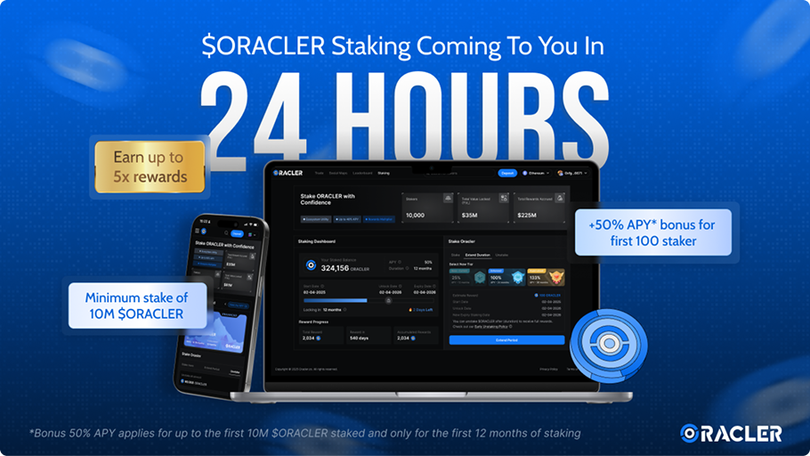

Revenue Increased!
1000% faster revenue ramp from earlier launch + user adoption
Oracler is an AI-powered trading intelligence platform that provides real-time market signals, staking tools, and referral systems for DeFi traders. They needed a dedicated team to build a high-performance platform capable of processing millions of data requests reliably and securely.
Visit website →Released
Feb 2023
Client
Oracler
Feature Usage
AI Trading Tool, Referral System, Staking Assets
Key Results
Integrated with major DeFi projects, millions of data requests processed
Collaboration Type: Dedicated Team
Cyberk provided a dedicated engineering team that operated as an integrated extension of Oracler's product organization. Our developers, QA engineers, and technical leads worked alongside Oracler's founders to build and iterate on the platform from initial concept through production launch and beyond.
Challenge
Oracler required a platform that could deliver AI-powered trading signals with extreme reliability and minimal latency. The system needed to handle millions of data requests per day while maintaining accuracy and uptime. Security was critical given the financial nature of the platform, and the staking and referral systems required smart contract integration with robust audit trails. Fast data processing and real-time delivery were non-negotiable for their trader user base.
Services Provided
Cyberk designed and built a high-performance data pipeline optimized for real-time AI trading signals. Our architecture handled millions of requests with sub-second latency, leveraging caching strategies and efficient data structures to ensure traders always had access to the latest market intelligence.
We developed the AI trading tool interface, referral system with on-chain tracking, and staking mechanism with full smart contract integration. Each component was built with a security-first mindset, including regular code audits and penetration testing.
Our team also implemented comprehensive monitoring and alerting systems to ensure 24/7 platform reliability, along with an admin dashboard that gave Oracler's team full visibility into platform performance, user activity, and staking metrics.

Results & Achievements
The Oracler platform has delivered strong results since going live:
- Successfully integrated with major DeFi projects across multiple blockchain networks
- Processing millions of data requests daily with high reliability and low latency
- 1000% revenue increase driven by earlier market launch and rapid user adoption